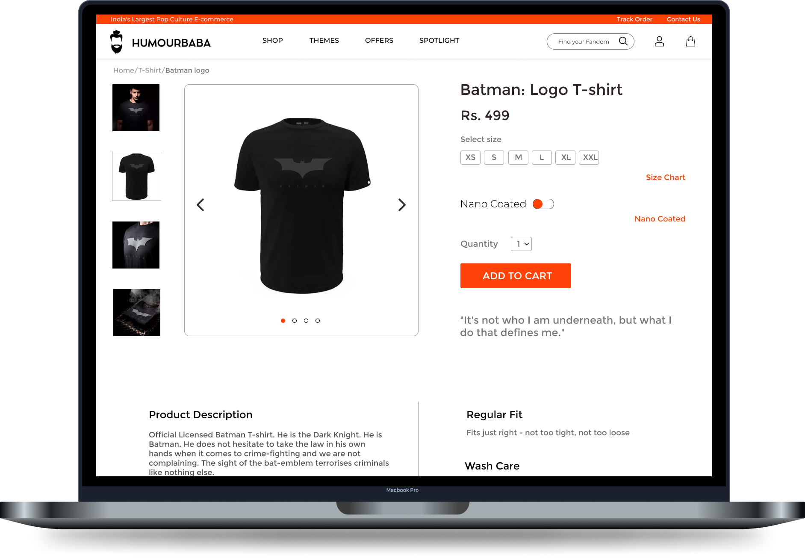

Design Projects
-

Inventory Management For Medical Stores
UX Design . Hackathon . March 2021
Designed a product experience for pharmacist to keep an easy check of the medicine inventory and also speed up the process of managing it.
Case Study -
STC App
Product design . UX Research . May 2021
Designed a multipurpose edtech app for the Student Tech Community. I built a design system and designed for edge cases while solving user needs.
Case Study
-

India Rep - Snapchat
Usability Testing . AR . September 2020 - Present
Lead the usabilty testing team for the app focused on the new ‘Spotlight’ feature and the ‘Shake to Report’ feature for India. Also made AR experiences that gathered over 500k views in total.
View Details -
House of Babas
UI/UX Design Internship . Dec 2019 - March 2020
As an intern, I designed an improved experience for the ecommerce website and admin side UI for the next gen fashion store - Humourbaba.
View Website -

FFCS On The Go - Redesign
UX Design. HCI Course Project . October - November 2020
Redesigned the web platform 'FFCS on the go' a practise portal to make academic timetables for VIT Vellore, by finding the problems using heuristics evaluation and solving them.
Case Study
Academic Projects/Research Reports

IOT based car protection
Used
in-built vibration sensors in the Airbag
ECU to detect abrupt vibrations from the
occurrence of an
accident and send the
location to the nearest hospital.
Fish stock data analysis
Detalied analysis of the fisheries stock
data using automatic differentiation
algorithm and data visualization
using trellis plotin R.
AI based covid prediction
Built a chatbot based web-App for
covid prediction using Image
Recognition and
Symptom Comparator.
Social distancing and mask
detector using OpenCV
and CNN
Created a ML model using Tenserflow and
Yolov3 to act as a detector.
Failure and it's repercussion
on students
Statistics based psychological study to
understand the downsides and impact
of failure on students.
Impact of Brexit on Indian
trade
Statistics based study to articulate
the impacts of brexit on India-Britain
and India-Europe trade.